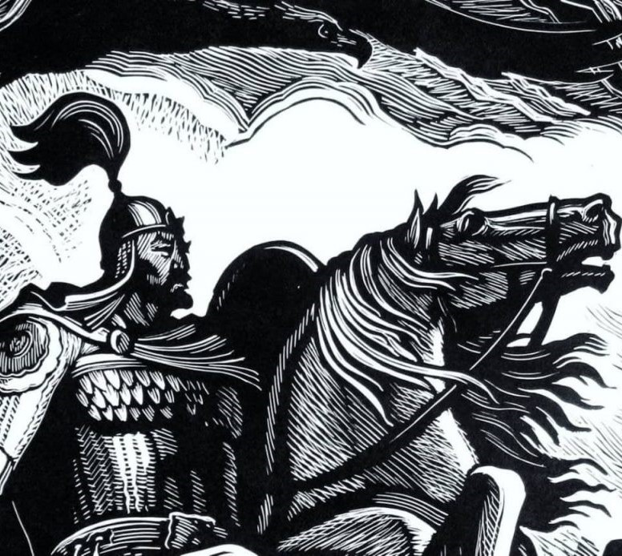
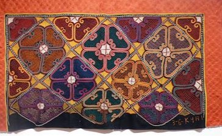

Manas
Manas, an epic poem, revolves around a series of events that coincide with the history of the region in the 9th
century, primarily the interaction of the Kyrgyz people with other Turkic and Chinese people. Manas is the
biggest among the poems.

Tush kyiz
Tush kyiz are large, elaborately embroidered wall hangings, traditionally made in Kyrgyzstan and Kazakhstan by
women to commemorate the marriage of a son or daughter. Colors and designs are chosen to symbolize Kyrgyz
traditions and rural life. Flowers, plants, animals, stylized horns, national designs, and emblems of Kyrgyz
life are often found in these ornate and colorful embroideries.
